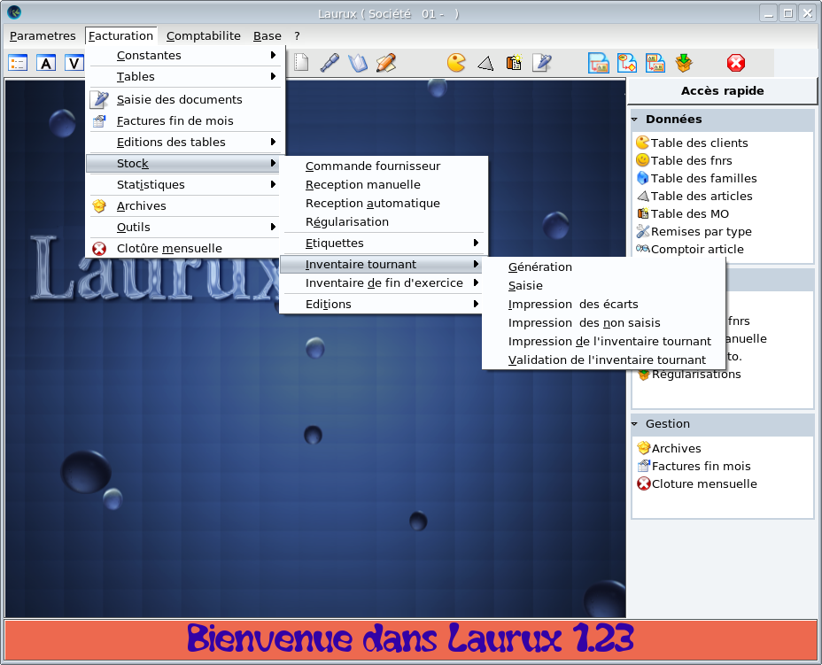

~ Comptabilité Laurux ~

~ Comptabilité Laurux ~ |
|
|
|

Toutes les options du menu sont dans la partie haute de l'écran. Pour certaines d'entre-elles vous avez la possibilité de cliquer sur les icones correspondantes situées en dessous de la partie " texte" ou à droite dans la zone "Accès rapide".